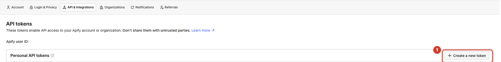
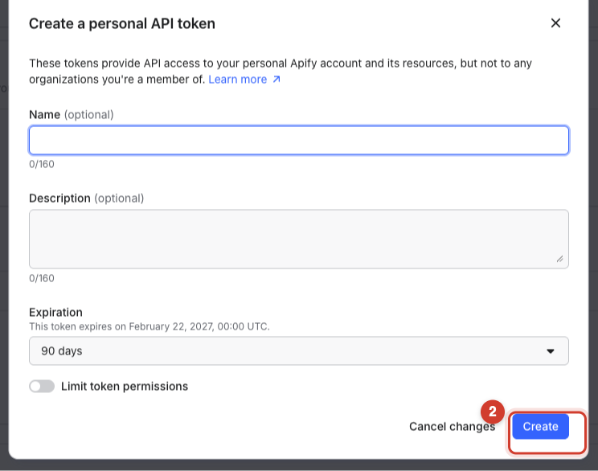
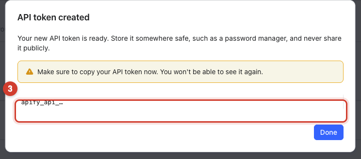

Как получить ключ Apify — по шагам со скриншотами
Работа занимает минут пять. Нужен аккаунт на Apify и его ключ — длинная строка, которая начинается с apify_api_.
1Зарегистрируйтесь на Apify
Откройте apify.com, нажмите Sign up и зарегистрируйтесь на свою почту.
Почту и пароль сохраните — в отчёте нужны именно они.
2Откройте настройки
После входа вы попадёте в консоль. В левом нижнем углу нажмите Settings, затем вкладку API & Integrations.
3Создайте ключ
Нажмите кнопку Create a new token — она справа, в блоке Personal API tokens.

Откроется окно. Поля Name и Description можно оставить пустыми, нажмите Create.

4Скопируйте ключ
Появится длинная строка, которая начинается с apify_api_. Скопируйте её целиком — это и есть ключ.
Ключ показывают один раз. Если закрыть окно, увидеть его снова не получится: придётся создавать новый.

5Пришлите три строки
В отчёте напишите три строки, каждую с новой строки:
почта, на которую зарегистрировались пароль от аккаунта Apify ключ, который начинается с apify_api_Пример (данные выдуманные):
ivan.petrov@mail.ru MojParol2026 apify_api_AbCdEfGhIjKlMnOpQrStUvWxYz0123456Что не подходит: скриншоты вместо текста, Apify user ID (короткий набор из 18 символов), имя пользователя, ссылки на профиль. Нужны именно почта, пароль и ключ.